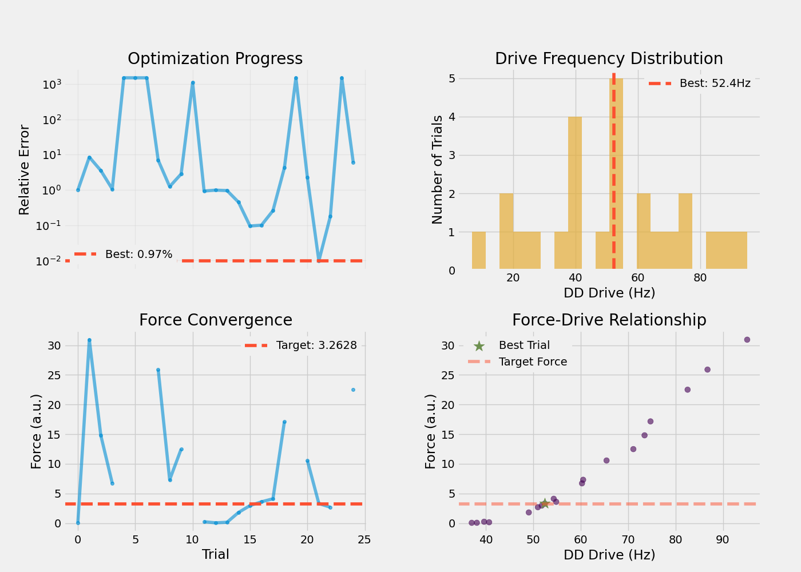

Note
Go to the end to download the full example code.
Optimizing Descending Drive for Target Force Levels#
This example demonstrates force-level optimization by tuning descending drive parameters to achieve specific muscle force outputs. Unlike firing rate optimization (example 00), this approach targets biomechanically relevant force production.
Note
Force-based optimization workflow:
Load baseline force from previous optimization (example 01)
Specify target force as percentage of baseline (e.g., 30% MVC)
Optimize DD drive frequency to match target force
Keep network structure fixed (neurons, connectivity from baseline)
Important
Prerequisites: This example requires results from previous examples:
Run
00_optimize_dd_for_target_firing_rate.pyfirstRun
01_compute_force_from_optimized_dd.pysecondGenerates baseline force measurements needed here
Optimization Strategy: We optimize only the DD drive frequency while keeping the network architecture fixed. This simulates modulating cortical drive to achieve different force levels while maintaining the same motor unit pool and connectivity.
Import Libraries#
import json
import os
os.environ["MPLBACKEND"] = "Agg"
if "DISPLAY" in os.environ:
del os.environ["DISPLAY"]
import warnings
from pathlib import Path
import joblib
import matplotlib.pyplot as plt
import numpy as np
import optuna
import quantities as pq
from neo import Block, Segment, SpikeTrain
from neuron import h
from myogen import RANDOM_GENERATOR, set_random_seed
from myogen.simulator import RecruitmentThresholds
from myogen.simulator.core.force.force_model import ForceModel
from myogen.simulator.neuron import Network
from myogen.simulator.neuron.populations import AlphaMN__Pool, DescendingDrive__Pool
from myogen.utils.helper import calculate_firing_rate_statistics, get_gamma_shape_for_mvc
from myogen.utils.nmodl import load_nmodl_mechanisms
warnings.filterwarnings("ignore")
plt.style.use("fivethirtyeight")
Configuration#
Set simulation and optimization parameters.
# Simulation parameters
SIMULATION_TIME_MS = 5000.0 # Shorter simulation for efficient optimization
TIMESTEP_MS = 0.1
N_MOTOR_UNITS = 100
# Force model parameters
RECORDING_FREQUENCY__HZ = 2048
LONGEST_DURATION_RISE_TIME__MS = 90.0
CONTRACTION_TIME_RANGE = 3
# Optimization settings
N_TRIALS = 25 # Reduced for example (increase for production)
TIMEOUT_SECONDS = 3600
# Target force level
TARGET_FORCE_PCT = 30.0 # 30% of baseline force (adjustable)
MVC_PERCENT = 30.0 # MVC percentage for gamma shape calculation
# Directories - use project root to share across examples
# Handle both manual execution and Sphinx Gallery (where __file__ is not defined)
try:
_script_dir = Path(__file__).parent
except NameError:
_script_dir = Path.cwd()
BASELINE_DIR = _script_dir.parent.parent / "results" / "force_validation"
RESULTS_DIR = _script_dir.parent.parent / "results" / "force_optimization"
RESULTS_DIR.mkdir(exist_ok=True, parents=True)
Load Baseline Force Data#
Load the baseline force measurements from example 01.
print("\nLoading Baseline Force Data")
print("=" * 50)
baseline_file = BASELINE_DIR / "force_results.json"
if not baseline_file.exists():
raise FileNotFoundError(
f"Baseline force results not found: {baseline_file}\n"
f"Run 01_compute_force_from_optimized_dd.py first!"
)
with open(baseline_file, "r") as f:
baseline_results = json.load(f)
# Extract baseline parameters
BASELINE_FORCE__AU = baseline_results["force"]["mean__au"]
DD_NEURONS = baseline_results["dd_parameters"]["dd_neurons"]
CONN_PROBABILITY = baseline_results["dd_parameters"]["conn_probability"]
SYNAPTIC_WEIGHT = baseline_results["dd_parameters"].get("synaptic_weight", 0.05)
MVC_SHAPE_VALUE = baseline_results["dd_parameters"]["gamma_shape"]
# Gfluctdv settings from baseline
GFLUCTDV_ENABLED = baseline_results.get("gfluctdv_enabled", False)
GFLUCTDV_NOISE_AMPLITUDE = baseline_results["dd_parameters"].get("gfluctdv_noise_amplitude", None)
print(f"Baseline force: {BASELINE_FORCE__AU:.4f} a.u.")
print(f"DD neurons: {DD_NEURONS}")
print(f"Connection probability: {CONN_PROBABILITY:.3f}")
print(f"Synaptic weight: {SYNAPTIC_WEIGHT:.4f} µS")
if GFLUCTDV_ENABLED:
print(f"Gfluctdv: ENABLED ({GFLUCTDV_NOISE_AMPLITUDE:.2e} S/cm²)")
print("=" * 50 + "\n")
Loading Baseline Force Data
==================================================
Baseline force: 10.8761 a.u.
DD neurons: 184
Connection probability: 0.494
Synaptic weight: 0.0500 µS
==================================================
Initialize NEURON#
set_random_seed(42)
load_nmodl_mechanisms()
h.secondorder = 2
Random seed set to 42.
Define Simulation Function#
Helper function to run a single simulation and compute force.
def run_simulation_and_compute_force(dd_drive__Hz, gamma_shape, recruitment_thresholds):
"""
Run network simulation and compute resulting force.
Parameters
----------
dd_drive__Hz : float
DD drive frequency
gamma_shape : float
Gamma distribution shape parameter
recruitment_thresholds : np.ndarray
Motor unit recruitment thresholds
Returns
-------
tuple
(force_mean, n_active, fr_mean, fr_std)
"""
# Create motor neuron pool
motor_neuron_pool = AlphaMN__Pool(
recruitment_thresholds__array=recruitment_thresholds,
config_file="alpha_mn_default.yaml",
)
# Apply Gfluctdv if enabled
if GFLUCTDV_ENABLED and GFLUCTDV_NOISE_AMPLITUDE is not None:
for cell in motor_neuron_pool:
cell.insert_Gfluctdv()
for d in cell.dend:
d.std_e_Gfluctdv = GFLUCTDV_NOISE_AMPLITUDE
d.std_i_Gfluctdv = GFLUCTDV_NOISE_AMPLITUDE
# Create descending drive pool
descending_drive_pool = DescendingDrive__Pool(
n=DD_NEURONS,
timestep__ms=TIMESTEP_MS * pq.ms,
process_type="gamma",
shape=gamma_shape,
)
# Build network
network = Network({"DD": descending_drive_pool, "aMN": motor_neuron_pool})
network.connect(
source="DD",
target="aMN",
probability=CONN_PROBABILITY,
weight__uS=SYNAPTIC_WEIGHT * pq.uS,
)
network.connect_from_external(source="cortical_input", target="DD", weight__uS=1.0 * pq.uS)
dd_netcons = network.get_netcons("cortical_input", "DD")
# Setup spike recording
mn_spike_recorders = []
for cell in motor_neuron_pool:
spike_recorder = h.Vector()
nc = h.NetCon(cell.soma(0.5)._ref_v, None, sec=cell.soma)
nc.threshold = 50
nc.record(spike_recorder)
mn_spike_recorders.append(spike_recorder)
# Create constant drive signal
time_points = int(SIMULATION_TIME_MS / TIMESTEP_MS)
drive_signal = np.ones(time_points) * dd_drive__Hz + np.clip(
RANDOM_GENERATOR.normal(0, 1.0, size=time_points), 0, None
)
# Initialize simulation
h.load_file("stdrun.hoc")
h.dt = TIMESTEP_MS
h.tstop = SIMULATION_TIME_MS
for section, voltage in zip(*motor_neuron_pool.get_initialization_data()):
section.v = voltage
for section, voltage in zip(*descending_drive_pool.get_initialization_data()):
section.v = voltage
h.finitialize()
# Run simulation
step_counter = 0
while h.t < h.tstop:
current_drive = drive_signal[min(step_counter, len(drive_signal) - 1)]
for dd_cell in descending_drive_pool:
if dd_cell.integrate(current_drive):
if h.t < h.tstop:
dd_netcons[dd_cell.pool__ID].event(h.t + 1)
h.fadvance()
step_counter += 1
# Convert to Neo format
dt_s = h.dt / 1000.0
mn_segment = Segment(name="Motor Neurons")
mn_segment.spiketrains = [
SpikeTrain(
recorder.as_numpy() / 1000 * pq.s,
t_stop=SIMULATION_TIME_MS / 1000 * pq.s,
sampling_rate=(1 / dt_s * pq.Hz),
sampling_period=dt_s * pq.s,
name=f"MN_{i}",
)
for i, recorder in enumerate(mn_spike_recorders)
]
spike_train__Block = Block(name="Motor Unit Pool")
spike_train__Block.segments = [mn_segment]
# Calculate statistics
n_active = sum(1 for st in mn_segment.spiketrains if len(st) > 1)
stats = calculate_firing_rate_statistics(mn_segment.spiketrains)
fr_mean = float(stats["FR_mean"])
fr_std = float(stats["FR_std"])
# Generate force
force_model = ForceModel(
recruitment_thresholds=recruitment_thresholds,
recording_frequency__Hz=RECORDING_FREQUENCY__HZ * pq.Hz,
longest_duration_rise_time__ms=LONGEST_DURATION_RISE_TIME__MS * pq.ms,
contraction_time_range_factor=CONTRACTION_TIME_RANGE,
)
force_output = force_model.generate_force(spike_train__Block=spike_train__Block)
force_signal = force_output.magnitude[:, 0]
# Calculate steady-state force
steady_idx = len(force_signal) // 2
force_mean = np.mean(force_signal[steady_idx:])
return force_mean, n_active, fr_mean, fr_std
Define Objective Function#
Optuna objective function that minimizes force error.
# Calculate target force
TARGET_FORCE__AU = BASELINE_FORCE__AU * (TARGET_FORCE_PCT / 100.0)
# Generate recruitment thresholds
recruitment_thresholds, _ = RecruitmentThresholds(
N=N_MOTOR_UNITS,
recruitment_range__ratio=100,
deluca__slope=5,
konstantin__max_threshold__ratio=1.0,
mode="combined",
)
def objective(trial):
"""
Optimize DD drive frequency to match target force.
Parameters
----------
trial : optuna.Trial
Optimization trial
Returns
-------
float
Relative force error (minimize)
"""
try:
# Optimize only DD drive frequency
dd_drive__Hz = trial.suggest_float("dd_drive", 1.0, 100.0)
gamma_shape = get_gamma_shape_for_mvc(MVC_PERCENT, MVC_SHAPE_VALUE)
# Run simulation
force_mean, n_active, fr_mean, fr_std = run_simulation_and_compute_force(
dd_drive__Hz, gamma_shape, recruitment_thresholds
)
# Check minimum recruitment
if n_active < 5:
return 1000.0 + (5 - n_active) * 100.0
# Calculate relative error
force_error = abs(force_mean - TARGET_FORCE__AU) / TARGET_FORCE__AU
# Store metadata
trial.set_user_attr("force_achieved", float(force_mean))
trial.set_user_attr("force_error", float(force_error))
trial.set_user_attr("n_active", n_active)
trial.set_user_attr("dd_drive__Hz", float(dd_drive__Hz))
trial.set_user_attr("FR_mean", float(fr_mean))
trial.set_user_attr("FR_std", float(fr_std))
if trial.number % 5 == 0:
print(
f"Trial {trial.number}: "
f"Force={force_mean:.4f} (target={TARGET_FORCE__AU:.4f}), "
f"Error={force_error:.1%}, "
f"Drive={dd_drive__Hz:.1f}Hz"
)
return force_error
except Exception as e:
print(f"Trial {trial.number} failed: {e}")
return 1000.0
Run Optimization#
Use Optuna TPE sampler to find optimal DD drive frequency.
print(f"\nOptimizing for {TARGET_FORCE_PCT}% of Baseline Force")
print("=" * 50)
print(f"Target force: {TARGET_FORCE__AU:.4f} a.u.")
print(f"Trials: {N_TRIALS}\n")
# Get colors from style
colors = plt.rcParams["axes.prop_cycle"].by_key()["color"]
storage_name = f"sqlite:///{RESULTS_DIR}/optuna_force_{int(TARGET_FORCE_PCT)}pct.db"
study = optuna.create_study(
direction="minimize",
sampler=optuna.samplers.TPESampler(seed=42),
study_name=f"force_{int(TARGET_FORCE_PCT)}pct",
storage=storage_name,
load_if_exists=True,
)
study.optimize(objective, n_trials=N_TRIALS, timeout=TIMEOUT_SECONDS, show_progress_bar=True)
Optimizing for 30.0% of Baseline Force
==================================================
Target force: 3.2628 a.u.
Trials: 25
0%| | 0/25 [00:00<?, ?it/s]
Pool 1 Twitch trains (Numba): 0%| | 0/100 [00:00<?, ?MU/s]
Pool 1 Twitch trains (Numba): 1%| | 1/100 [00:00<00:12, 7.80MU/s]
Pool 1 Twitch trains (Numba): 100%|██████████| 100/100 [00:00<00:00, 758.62MU/s]
Trial 0: Force=0.0577 (target=3.2628), Error=98.2%, Drive=38.1Hz
[I 2026-01-06 18:54:35,058] Trial 0 finished with value: 0.9823102630391121 and parameters: {'dd_drive': 38.07947176588889}. Best is trial 0 with value: 0.9823102630391121.
0%| | 0/25 [00:05<?, ?it/s]
Best trial: 0. Best value: 0.98231: 0%| | 0/25 [00:05<?, ?it/s]
Best trial: 0. Best value: 0.98231: 4%|▍ | 1/25 [00:05<02:03, 5.13s/it]
Best trial: 0. Best value: 0.98231: 4%|▍ | 1/25 [00:05<02:03, 5.13s/it, 5.13/3600 seconds]
Pool 1 Twitch trains (Numba): 0%| | 0/100 [00:00<?, ?MU/s]
Pool 1 Twitch trains (Numba): 1%| | 1/100 [00:00<00:12, 7.80MU/s]
Pool 1 Twitch trains (Numba): 100%|██████████| 100/100 [00:00<00:00, 739.60MU/s]
[I 2026-01-06 18:54:40,819] Trial 1 finished with value: 8.484494203446149 and parameters: {'dd_drive': 95.1207163345817}. Best is trial 0 with value: 0.9823102630391121.
Best trial: 0. Best value: 0.98231: 4%|▍ | 1/25 [00:10<02:03, 5.13s/it, 5.13/3600 seconds]
Best trial: 0. Best value: 0.98231: 4%|▍ | 1/25 [00:10<02:03, 5.13s/it, 5.13/3600 seconds]
Best trial: 0. Best value: 0.98231: 8%|▊ | 2/25 [00:10<02:06, 5.50s/it, 5.13/3600 seconds]
Best trial: 0. Best value: 0.98231: 8%|▊ | 2/25 [00:10<02:06, 5.50s/it, 10.89/3600 seconds]
Pool 1 Twitch trains (Numba): 0%| | 0/100 [00:00<?, ?MU/s]
Pool 1 Twitch trains (Numba): 1%| | 1/100 [00:00<00:12, 7.74MU/s]
Pool 1 Twitch trains (Numba): 100%|██████████| 100/100 [00:00<00:00, 740.91MU/s]
[I 2026-01-06 18:54:46,342] Trial 2 finished with value: 3.5390245203612505 and parameters: {'dd_drive': 73.46740023932911}. Best is trial 0 with value: 0.9823102630391121.
Best trial: 0. Best value: 0.98231: 8%|▊ | 2/25 [00:16<02:06, 5.50s/it, 10.89/3600 seconds]
Best trial: 0. Best value: 0.98231: 8%|▊ | 2/25 [00:16<02:06, 5.50s/it, 10.89/3600 seconds]
Best trial: 0. Best value: 0.98231: 12%|█▏ | 3/25 [00:16<02:01, 5.51s/it, 10.89/3600 seconds]
Best trial: 0. Best value: 0.98231: 12%|█▏ | 3/25 [00:16<02:01, 5.51s/it, 16.41/3600 seconds]
Pool 1 Twitch trains (Numba): 0%| | 0/100 [00:00<?, ?MU/s]
Pool 1 Twitch trains (Numba): 1%| | 1/100 [00:00<00:12, 7.77MU/s]
Pool 1 Twitch trains (Numba): 100%|██████████| 100/100 [00:00<00:00, 747.27MU/s]
[I 2026-01-06 18:54:51,793] Trial 3 finished with value: 1.0556613942233675 and parameters: {'dd_drive': 60.26718993550662}. Best is trial 0 with value: 0.9823102630391121.
Best trial: 0. Best value: 0.98231: 12%|█▏ | 3/25 [00:21<02:01, 5.51s/it, 16.41/3600 seconds]
Best trial: 0. Best value: 0.98231: 12%|█▏ | 3/25 [00:21<02:01, 5.51s/it, 16.41/3600 seconds]
Best trial: 0. Best value: 0.98231: 16%|█▌ | 4/25 [00:21<01:55, 5.49s/it, 16.41/3600 seconds]
Best trial: 0. Best value: 0.98231: 16%|█▌ | 4/25 [00:21<01:55, 5.49s/it, 21.86/3600 seconds]
Pool 1 Twitch trains (Numba): 0%| | 0/100 [00:00<?, ?MU/s]
Pool 1 Twitch trains (Numba): 1%| | 1/100 [00:00<00:12, 7.81MU/s]
Pool 1 Twitch trains (Numba): 100%|██████████| 100/100 [00:00<00:00, 760.59MU/s]
[I 2026-01-06 18:54:56,729] Trial 4 finished with value: 1500.0 and parameters: {'dd_drive': 16.445845403801215}. Best is trial 0 with value: 0.9823102630391121.
Best trial: 0. Best value: 0.98231: 16%|█▌ | 4/25 [00:26<01:55, 5.49s/it, 21.86/3600 seconds]
Best trial: 0. Best value: 0.98231: 16%|█▌ | 4/25 [00:26<01:55, 5.49s/it, 21.86/3600 seconds]
Best trial: 0. Best value: 0.98231: 20%|██ | 5/25 [00:26<01:45, 5.29s/it, 21.86/3600 seconds]
Best trial: 0. Best value: 0.98231: 20%|██ | 5/25 [00:26<01:45, 5.29s/it, 26.80/3600 seconds]
Pool 1 Twitch trains (Numba): 0%| | 0/100 [00:00<?, ?MU/s]
Pool 1 Twitch trains (Numba): 1%| | 1/100 [00:00<00:12, 7.74MU/s]
Pool 1 Twitch trains (Numba): 100%|██████████| 100/100 [00:00<00:00, 753.18MU/s]
[I 2026-01-06 18:55:01,629] Trial 5 finished with value: 1500.0 and parameters: {'dd_drive': 16.443457513284063}. Best is trial 0 with value: 0.9823102630391121.
Best trial: 0. Best value: 0.98231: 20%|██ | 5/25 [00:31<01:45, 5.29s/it, 26.80/3600 seconds]
Best trial: 0. Best value: 0.98231: 20%|██ | 5/25 [00:31<01:45, 5.29s/it, 26.80/3600 seconds]
Best trial: 0. Best value: 0.98231: 24%|██▍ | 6/25 [00:31<01:37, 5.16s/it, 26.80/3600 seconds]
Best trial: 0. Best value: 0.98231: 24%|██▍ | 6/25 [00:31<01:37, 5.16s/it, 31.70/3600 seconds]
Pool 1 Twitch trains (Numba): 0%| | 0/100 [00:00<?, ?MU/s]
Pool 1 Twitch trains (Numba): 1%| | 1/100 [00:00<00:12, 7.79MU/s]
Pool 1 Twitch trains (Numba): 100%|██████████| 100/100 [00:00<00:00, 758.17MU/s]
[I 2026-01-06 18:55:06,524] Trial 6 finished with value: 1500.0 and parameters: {'dd_drive': 6.750277604651747}. Best is trial 0 with value: 0.9823102630391121.
Best trial: 0. Best value: 0.98231: 24%|██▍ | 6/25 [00:36<01:37, 5.16s/it, 31.70/3600 seconds]
Best trial: 0. Best value: 0.98231: 24%|██▍ | 6/25 [00:36<01:37, 5.16s/it, 31.70/3600 seconds]
Best trial: 0. Best value: 0.98231: 28%|██▊ | 7/25 [00:36<01:31, 5.07s/it, 31.70/3600 seconds]
Best trial: 0. Best value: 0.98231: 28%|██▊ | 7/25 [00:36<01:31, 5.07s/it, 36.60/3600 seconds]
Pool 1 Twitch trains (Numba): 0%| | 0/100 [00:00<?, ?MU/s]
Pool 1 Twitch trains (Numba): 1%| | 1/100 [00:00<00:12, 7.80MU/s]
Pool 1 Twitch trains (Numba): 100%|██████████| 100/100 [00:00<00:00, 741.74MU/s]
[I 2026-01-06 18:55:12,228] Trial 7 finished with value: 6.937986307659485 and parameters: {'dd_drive': 86.75143843171858}. Best is trial 0 with value: 0.9823102630391121.
Best trial: 0. Best value: 0.98231: 28%|██▊ | 7/25 [00:42<01:31, 5.07s/it, 36.60/3600 seconds]
Best trial: 0. Best value: 0.98231: 28%|██▊ | 7/25 [00:42<01:31, 5.07s/it, 36.60/3600 seconds]
Best trial: 0. Best value: 0.98231: 32%|███▏ | 8/25 [00:42<01:29, 5.27s/it, 36.60/3600 seconds]
Best trial: 0. Best value: 0.98231: 32%|███▏ | 8/25 [00:42<01:29, 5.27s/it, 42.30/3600 seconds]
Pool 1 Twitch trains (Numba): 0%| | 0/100 [00:00<?, ?MU/s]
Pool 1 Twitch trains (Numba): 1%| | 1/100 [00:00<00:12, 7.75MU/s]
Pool 1 Twitch trains (Numba): 100%|██████████| 100/100 [00:00<00:00, 745.00MU/s]
[I 2026-01-06 18:55:17,708] Trial 8 finished with value: 1.2402970166232183 and parameters: {'dd_drive': 60.510386162577674}. Best is trial 0 with value: 0.9823102630391121.
Best trial: 0. Best value: 0.98231: 32%|███▏ | 8/25 [00:47<01:29, 5.27s/it, 42.30/3600 seconds]
Best trial: 0. Best value: 0.98231: 32%|███▏ | 8/25 [00:47<01:29, 5.27s/it, 42.30/3600 seconds]
Best trial: 0. Best value: 0.98231: 36%|███▌ | 9/25 [00:47<01:25, 5.34s/it, 42.30/3600 seconds]
Best trial: 0. Best value: 0.98231: 36%|███▌ | 9/25 [00:47<01:25, 5.34s/it, 47.78/3600 seconds]
Pool 1 Twitch trains (Numba): 0%| | 0/100 [00:00<?, ?MU/s]
Pool 1 Twitch trains (Numba): 1%| | 1/100 [00:00<00:12, 7.80MU/s]
Pool 1 Twitch trains (Numba): 100%|██████████| 100/100 [00:00<00:00, 746.85MU/s]
[I 2026-01-06 18:55:23,280] Trial 9 finished with value: 2.8261894288982172 and parameters: {'dd_drive': 71.09918520180851}. Best is trial 0 with value: 0.9823102630391121.
Best trial: 0. Best value: 0.98231: 36%|███▌ | 9/25 [00:53<01:25, 5.34s/it, 47.78/3600 seconds]
Best trial: 0. Best value: 0.98231: 36%|███▌ | 9/25 [00:53<01:25, 5.34s/it, 47.78/3600 seconds]
Best trial: 0. Best value: 0.98231: 40%|████ | 10/25 [00:53<01:21, 5.41s/it, 47.78/3600 seconds]
Best trial: 0. Best value: 0.98231: 40%|████ | 10/25 [00:53<01:21, 5.41s/it, 53.35/3600 seconds]
Pool 1 Twitch trains (Numba): 0%| | 0/100 [00:00<?, ?MU/s]
Pool 1 Twitch trains (Numba): 1%| | 1/100 [00:00<00:12, 7.68MU/s]
Pool 1 Twitch trains (Numba): 100%|██████████| 100/100 [00:00<00:00, 747.87MU/s]
[I 2026-01-06 18:55:28,492] Trial 10 finished with value: 1100.0 and parameters: {'dd_drive': 38.07318637690311}. Best is trial 0 with value: 0.9823102630391121.
Best trial: 0. Best value: 0.98231: 40%|████ | 10/25 [00:58<01:21, 5.41s/it, 53.35/3600 seconds]
Best trial: 0. Best value: 0.98231: 40%|████ | 10/25 [00:58<01:21, 5.41s/it, 53.35/3600 seconds]
Best trial: 0. Best value: 0.98231: 44%|████▍ | 11/25 [00:58<01:14, 5.35s/it, 53.35/3600 seconds]
Best trial: 0. Best value: 0.98231: 44%|████▍ | 11/25 [00:58<01:14, 5.35s/it, 58.56/3600 seconds]
Pool 1 Twitch trains (Numba): 0%| | 0/100 [00:00<?, ?MU/s]
Pool 1 Twitch trains (Numba): 1%| | 1/100 [00:00<00:31, 3.15MU/s]
Pool 1 Twitch trains (Numba): 100%|██████████| 100/100 [00:00<00:00, 311.39MU/s]
[I 2026-01-06 18:55:34,003] Trial 11 finished with value: 0.9292700999288681 and parameters: {'dd_drive': 39.61182493133876}. Best is trial 11 with value: 0.9292700999288681.
Best trial: 0. Best value: 0.98231: 44%|████▍ | 11/25 [01:04<01:14, 5.35s/it, 58.56/3600 seconds]
Best trial: 11. Best value: 0.92927: 44%|████▍ | 11/25 [01:04<01:14, 5.35s/it, 58.56/3600 seconds]
Best trial: 11. Best value: 0.92927: 48%|████▊ | 12/25 [01:04<01:10, 5.40s/it, 58.56/3600 seconds]
Best trial: 11. Best value: 0.92927: 48%|████▊ | 12/25 [01:04<01:10, 5.40s/it, 64.07/3600 seconds]
Pool 1 Twitch trains (Numba): 0%| | 0/100 [00:00<?, ?MU/s]
Pool 1 Twitch trains (Numba): 1%| | 1/100 [00:00<00:12, 7.83MU/s]
Pool 1 Twitch trains (Numba): 100%|██████████| 100/100 [00:00<00:00, 761.50MU/s]
[I 2026-01-06 18:55:39,216] Trial 12 finished with value: 0.9848339049257869 and parameters: {'dd_drive': 37.00035094604319}. Best is trial 11 with value: 0.9292700999288681.
Best trial: 11. Best value: 0.92927: 48%|████▊ | 12/25 [01:09<01:10, 5.40s/it, 64.07/3600 seconds]
Best trial: 11. Best value: 0.92927: 48%|████▊ | 12/25 [01:09<01:10, 5.40s/it, 64.07/3600 seconds]
Best trial: 11. Best value: 0.92927: 52%|█████▏ | 13/25 [01:09<01:04, 5.34s/it, 64.07/3600 seconds]
Best trial: 11. Best value: 0.92927: 52%|█████▏ | 13/25 [01:09<01:04, 5.34s/it, 69.29/3600 seconds]
Pool 1 Twitch trains (Numba): 0%| | 0/100 [00:00<?, ?MU/s]
Pool 1 Twitch trains (Numba): 1%| | 1/100 [00:00<00:12, 7.80MU/s]
Pool 1 Twitch trains (Numba): 100%|██████████| 100/100 [00:00<00:00, 757.64MU/s]
[I 2026-01-06 18:55:44,590] Trial 13 finished with value: 0.9567530599670472 and parameters: {'dd_drive': 40.66759286131373}. Best is trial 11 with value: 0.9292700999288681.
Best trial: 11. Best value: 0.92927: 52%|█████▏ | 13/25 [01:14<01:04, 5.34s/it, 69.29/3600 seconds]
Best trial: 11. Best value: 0.92927: 52%|█████▏ | 13/25 [01:14<01:04, 5.34s/it, 69.29/3600 seconds]
Best trial: 11. Best value: 0.92927: 56%|█████▌ | 14/25 [01:14<00:58, 5.35s/it, 69.29/3600 seconds]
Best trial: 11. Best value: 0.92927: 56%|█████▌ | 14/25 [01:14<00:58, 5.35s/it, 74.66/3600 seconds]
Pool 1 Twitch trains (Numba): 0%| | 0/100 [00:00<?, ?MU/s]
Pool 1 Twitch trains (Numba): 1%| | 1/100 [00:00<00:12, 7.80MU/s]
Pool 1 Twitch trains (Numba): 100%|██████████| 100/100 [00:00<00:00, 754.95MU/s]
[I 2026-01-06 18:55:49,946] Trial 14 finished with value: 0.44878758986459116 and parameters: {'dd_drive': 49.0418556481266}. Best is trial 14 with value: 0.44878758986459116.
Best trial: 11. Best value: 0.92927: 56%|█████▌ | 14/25 [01:20<00:58, 5.35s/it, 74.66/3600 seconds]
Best trial: 14. Best value: 0.448788: 56%|█████▌ | 14/25 [01:20<00:58, 5.35s/it, 74.66/3600 seconds]
Best trial: 14. Best value: 0.448788: 60%|██████ | 15/25 [01:20<00:53, 5.35s/it, 74.66/3600 seconds]
Best trial: 14. Best value: 0.448788: 60%|██████ | 15/25 [01:20<00:53, 5.35s/it, 80.02/3600 seconds]
Pool 1 Twitch trains (Numba): 0%| | 0/100 [00:00<?, ?MU/s]
Pool 1 Twitch trains (Numba): 1%| | 1/100 [00:00<00:12, 7.76MU/s]
Pool 1 Twitch trains (Numba): 100%|██████████| 100/100 [00:00<00:00, 750.78MU/s]
Trial 15: Force=2.9535 (target=3.2628), Error=9.5%, Drive=51.8Hz
[I 2026-01-06 18:55:55,309] Trial 15 finished with value: 0.09479941286473444 and parameters: {'dd_drive': 51.76931053009874}. Best is trial 15 with value: 0.09479941286473444.
Best trial: 14. Best value: 0.448788: 60%|██████ | 15/25 [01:25<00:53, 5.35s/it, 80.02/3600 seconds]
Best trial: 15. Best value: 0.0947994: 60%|██████ | 15/25 [01:25<00:53, 5.35s/it, 80.02/3600 seconds]
Best trial: 15. Best value: 0.0947994: 64%|██████▍ | 16/25 [01:25<00:48, 5.36s/it, 80.02/3600 seconds]
Best trial: 15. Best value: 0.0947994: 64%|██████▍ | 16/25 [01:25<00:48, 5.36s/it, 85.38/3600 seconds]
Pool 1 Twitch trains (Numba): 0%| | 0/100 [00:00<?, ?MU/s]
Pool 1 Twitch trains (Numba): 1%| | 1/100 [00:00<00:12, 7.70MU/s]
Pool 1 Twitch trains (Numba): 100%|██████████| 100/100 [00:00<00:00, 743.70MU/s]
[I 2026-01-06 18:56:00,744] Trial 16 finished with value: 0.10015893451066808 and parameters: {'dd_drive': 54.82271566310558}. Best is trial 15 with value: 0.09479941286473444.
Best trial: 15. Best value: 0.0947994: 64%|██████▍ | 16/25 [01:30<00:48, 5.36s/it, 85.38/3600 seconds]
Best trial: 15. Best value: 0.0947994: 64%|██████▍ | 16/25 [01:30<00:48, 5.36s/it, 85.38/3600 seconds]
Best trial: 15. Best value: 0.0947994: 68%|██████▊ | 17/25 [01:30<00:43, 5.38s/it, 85.38/3600 seconds]
Best trial: 15. Best value: 0.0947994: 68%|██████▊ | 17/25 [01:30<00:43, 5.38s/it, 90.82/3600 seconds]
Pool 1 Twitch trains (Numba): 0%| | 0/100 [00:00<?, ?MU/s]
Pool 1 Twitch trains (Numba): 1%| | 1/100 [00:00<00:12, 7.75MU/s]
Pool 1 Twitch trains (Numba): 100%|██████████| 100/100 [00:00<00:00, 748.10MU/s]
[I 2026-01-06 18:56:06,150] Trial 17 finished with value: 0.25819104327798154 and parameters: {'dd_drive': 54.30216790381792}. Best is trial 15 with value: 0.09479941286473444.
Best trial: 15. Best value: 0.0947994: 68%|██████▊ | 17/25 [01:36<00:43, 5.38s/it, 90.82/3600 seconds]
Best trial: 15. Best value: 0.0947994: 68%|██████▊ | 17/25 [01:36<00:43, 5.38s/it, 90.82/3600 seconds]
Best trial: 15. Best value: 0.0947994: 72%|███████▏ | 18/25 [01:36<00:37, 5.39s/it, 90.82/3600 seconds]
Best trial: 15. Best value: 0.0947994: 72%|███████▏ | 18/25 [01:36<00:37, 5.39s/it, 96.22/3600 seconds]
Pool 1 Twitch trains (Numba): 0%| | 0/100 [00:00<?, ?MU/s]
Pool 1 Twitch trains (Numba): 1%| | 1/100 [00:00<00:12, 7.83MU/s]
Pool 1 Twitch trains (Numba): 100%|██████████| 100/100 [00:00<00:00, 748.64MU/s]
[I 2026-01-06 18:56:11,877] Trial 18 finished with value: 4.259930147242612 and parameters: {'dd_drive': 74.72142904562283}. Best is trial 15 with value: 0.09479941286473444.
Best trial: 15. Best value: 0.0947994: 72%|███████▏ | 18/25 [01:41<00:37, 5.39s/it, 96.22/3600 seconds]
Best trial: 15. Best value: 0.0947994: 72%|███████▏ | 18/25 [01:41<00:37, 5.39s/it, 96.22/3600 seconds]
Best trial: 15. Best value: 0.0947994: 76%|███████▌ | 19/25 [01:41<00:32, 5.49s/it, 96.22/3600 seconds]
Best trial: 15. Best value: 0.0947994: 76%|███████▌ | 19/25 [01:41<00:32, 5.49s/it, 101.95/3600 seconds]
Pool 1 Twitch trains (Numba): 0%| | 0/100 [00:00<?, ?MU/s]
Pool 1 Twitch trains (Numba): 1%| | 1/100 [00:00<00:12, 7.86MU/s]
Pool 1 Twitch trains (Numba): 100%|██████████| 100/100 [00:00<00:00, 765.15MU/s]
[I 2026-01-06 18:56:16,918] Trial 19 finished with value: 1500.0 and parameters: {'dd_drive': 24.154543283398297}. Best is trial 15 with value: 0.09479941286473444.
Best trial: 15. Best value: 0.0947994: 76%|███████▌ | 19/25 [01:46<00:32, 5.49s/it, 101.95/3600 seconds]
Best trial: 15. Best value: 0.0947994: 76%|███████▌ | 19/25 [01:46<00:32, 5.49s/it, 101.95/3600 seconds]
Best trial: 15. Best value: 0.0947994: 80%|████████ | 20/25 [01:46<00:26, 5.35s/it, 101.95/3600 seconds]
Best trial: 15. Best value: 0.0947994: 80%|████████ | 20/25 [01:46<00:26, 5.35s/it, 106.99/3600 seconds]
Pool 1 Twitch trains (Numba): 0%| | 0/100 [00:00<?, ?MU/s]
Pool 1 Twitch trains (Numba): 1%| | 1/100 [00:00<00:12, 7.81MU/s]
Pool 1 Twitch trains (Numba): 100%|██████████| 100/100 [00:00<00:00, 749.07MU/s]
Trial 20: Force=10.5610 (target=3.2628), Error=223.7%, Drive=65.4Hz
[I 2026-01-06 18:56:22,429] Trial 20 finished with value: 2.2367643580278536 and parameters: {'dd_drive': 65.44755250115355}. Best is trial 15 with value: 0.09479941286473444.
Best trial: 15. Best value: 0.0947994: 80%|████████ | 20/25 [01:52<00:26, 5.35s/it, 106.99/3600 seconds]
Best trial: 15. Best value: 0.0947994: 80%|████████ | 20/25 [01:52<00:26, 5.35s/it, 106.99/3600 seconds]
Best trial: 15. Best value: 0.0947994: 84%|████████▍ | 21/25 [01:52<00:21, 5.40s/it, 106.99/3600 seconds]
Best trial: 15. Best value: 0.0947994: 84%|████████▍ | 21/25 [01:52<00:21, 5.40s/it, 112.50/3600 seconds]
Pool 1 Twitch trains (Numba): 0%| | 0/100 [00:00<?, ?MU/s]
Pool 1 Twitch trains (Numba): 1%| | 1/100 [00:00<00:12, 7.82MU/s]
Pool 1 Twitch trains (Numba): 100%|██████████| 100/100 [00:00<00:00, 754.96MU/s]
[I 2026-01-06 18:56:27,869] Trial 21 finished with value: 0.009723035847462074 and parameters: {'dd_drive': 52.399014051112616}. Best is trial 21 with value: 0.009723035847462074.
Best trial: 15. Best value: 0.0947994: 84%|████████▍ | 21/25 [01:57<00:21, 5.40s/it, 112.50/3600 seconds]
Best trial: 21. Best value: 0.00972304: 84%|████████▍ | 21/25 [01:57<00:21, 5.40s/it, 112.50/3600 seconds]
Best trial: 21. Best value: 0.00972304: 88%|████████▊ | 22/25 [01:57<00:16, 5.41s/it, 112.50/3600 seconds]
Best trial: 21. Best value: 0.00972304: 88%|████████▊ | 22/25 [01:57<00:16, 5.41s/it, 117.94/3600 seconds]
Pool 1 Twitch trains (Numba): 0%| | 0/100 [00:00<?, ?MU/s]
Pool 1 Twitch trains (Numba): 1%| | 1/100 [00:00<00:12, 7.82MU/s]
Pool 1 Twitch trains (Numba): 100%|██████████| 100/100 [00:00<00:00, 756.52MU/s]
[I 2026-01-06 18:56:33,309] Trial 22 finished with value: 0.17842091714522995 and parameters: {'dd_drive': 50.9546454204201}. Best is trial 21 with value: 0.009723035847462074.
Best trial: 21. Best value: 0.00972304: 88%|████████▊ | 22/25 [02:03<00:16, 5.41s/it, 117.94/3600 seconds]
Best trial: 21. Best value: 0.00972304: 88%|████████▊ | 22/25 [02:03<00:16, 5.41s/it, 117.94/3600 seconds]
Best trial: 21. Best value: 0.00972304: 92%|█████████▏| 23/25 [02:03<00:10, 5.42s/it, 117.94/3600 seconds]
Best trial: 21. Best value: 0.00972304: 92%|█████████▏| 23/25 [02:03<00:10, 5.42s/it, 123.38/3600 seconds]
Pool 1 Twitch trains (Numba): 0%| | 0/100 [00:00<?, ?MU/s]
Pool 1 Twitch trains (Numba): 1%| | 1/100 [00:00<00:12, 7.79MU/s]
Pool 1 Twitch trains (Numba): 100%|██████████| 100/100 [00:00<00:00, 757.71MU/s]
[I 2026-01-06 18:56:38,410] Trial 23 finished with value: 1500.0 and parameters: {'dd_drive': 28.14566260153807}. Best is trial 21 with value: 0.009723035847462074.
Best trial: 21. Best value: 0.00972304: 92%|█████████▏| 23/25 [02:08<00:10, 5.42s/it, 123.38/3600 seconds]
Best trial: 21. Best value: 0.00972304: 92%|█████████▏| 23/25 [02:08<00:10, 5.42s/it, 123.38/3600 seconds]
Best trial: 21. Best value: 0.00972304: 96%|█████████▌| 24/25 [02:08<00:05, 5.32s/it, 123.38/3600 seconds]
Best trial: 21. Best value: 0.00972304: 96%|█████████▌| 24/25 [02:08<00:05, 5.32s/it, 128.48/3600 seconds]
Pool 1 Twitch trains (Numba): 0%| | 0/100 [00:00<?, ?MU/s]
Pool 1 Twitch trains (Numba): 1%| | 1/100 [00:00<00:12, 7.74MU/s]
Pool 1 Twitch trains (Numba): 100%|██████████| 100/100 [00:00<00:00, 738.05MU/s]
[I 2026-01-06 18:56:44,376] Trial 24 finished with value: 5.8989085682800875 and parameters: {'dd_drive': 82.55012239124997}. Best is trial 21 with value: 0.009723035847462074.
Best trial: 21. Best value: 0.00972304: 96%|█████████▌| 24/25 [02:14<00:05, 5.32s/it, 128.48/3600 seconds]
Best trial: 21. Best value: 0.00972304: 96%|█████████▌| 24/25 [02:14<00:05, 5.32s/it, 128.48/3600 seconds]
Best trial: 21. Best value: 0.00972304: 100%|██████████| 25/25 [02:14<00:00, 5.52s/it, 128.48/3600 seconds]
Best trial: 21. Best value: 0.00972304: 100%|██████████| 25/25 [02:14<00:00, 5.52s/it, 134.45/3600 seconds]
Best trial: 21. Best value: 0.00972304: 100%|██████████| 25/25 [02:14<00:00, 5.38s/it, 134.45/3600 seconds]
Analyze Results#
best_trial = study.best_trial
print("\nOptimization Complete")
print("=" * 50)
print(f"Best trial: {best_trial.number}")
print(f"Force error: {best_trial.value:.1%}")
print("\nForce Results:")
print(f" Target: {TARGET_FORCE__AU:.4f} a.u. ({TARGET_FORCE_PCT}% of baseline)")
print(f" Achieved: {best_trial.user_attrs['force_achieved']:.4f} a.u.")
print(f" Error: {best_trial.user_attrs['force_error']:.1%}")
print("\nOptimized Parameters:")
print(f" DD drive: {best_trial.user_attrs['dd_drive__Hz']:.2f} Hz")
print(f" Active MUs: {best_trial.user_attrs['n_active']}/{N_MOTOR_UNITS}")
print(
f" Firing rate: {best_trial.user_attrs['FR_mean']:.1f}±{best_trial.user_attrs['FR_std']:.1f} Hz"
)
Optimization Complete
==================================================
Best trial: 21
Force error: 1.0%
Force Results:
Target: 3.2628 a.u. (30.0% of baseline)
Achieved: 3.2946 a.u.
Error: 1.0%
Optimized Parameters:
DD drive: 52.40 Hz
Active MUs: 47/100
Firing rate: 5.5±2.3 Hz
Save Results#
dd_parameters = {
"dd_neurons": DD_NEURONS,
"conn_probability": CONN_PROBABILITY,
"synaptic_weight": SYNAPTIC_WEIGHT,
"dd_drive__Hz": best_trial.user_attrs["dd_drive__Hz"],
"mvc_percent": MVC_PERCENT,
"gamma_shape": get_gamma_shape_for_mvc(MVC_PERCENT, MVC_SHAPE_VALUE),
}
if GFLUCTDV_ENABLED:
dd_parameters["gfluctdv_noise_amplitude"] = GFLUCTDV_NOISE_AMPLITUDE
results = {
"target_force_pct": TARGET_FORCE_PCT,
"baseline_force__au": BASELINE_FORCE__AU,
"target_force__au": TARGET_FORCE__AU,
"achieved_force__au": best_trial.user_attrs["force_achieved"],
"force_error": best_trial.user_attrs["force_error"],
"gfluctdv_enabled": GFLUCTDV_ENABLED,
"dd_parameters": dd_parameters,
}
json_path = RESULTS_DIR / f"dd_optimized_params_force_{int(TARGET_FORCE_PCT)}pct.json"
with open(json_path, "w") as f:
json.dump(results, f, indent=2)
joblib.dump(study, RESULTS_DIR / f"study_force_{int(TARGET_FORCE_PCT)}pct.pkl")
print(f"\nSaved results: {json_path}")
Saved results: /home/runner/work/MyoGen/MyoGen/results/force_optimization/dd_optimized_params_force_30pct.json
Visualize Optimization History#
fig = plt.figure(figsize=(14, 10))
gs = fig.add_gridspec(2, 2, hspace=0.3, wspace=0.3)
# Extract trial data
trial_numbers = [t.number for t in study.trials]
force_achieved = [t.user_attrs.get("force_achieved", None) for t in study.trials]
force_errors = [t.value for t in study.trials]
dd_drive_vals = [t.params.get("dd_drive", None) for t in study.trials]
# Left column: shared x-axis for optimization progress and force convergence
ax_error = fig.add_subplot(gs[0, 0])
ax_force = fig.add_subplot(gs[1, 0], sharex=ax_error)
# 1. Optimization progress (force error) - top left
ax_error.plot(trial_numbers, force_errors, "o-", alpha=0.6, markersize=4, color=colors[0])
ax_error.axhline(
best_trial.value, linestyle="--", color=colors[1], label=f"Best: {best_trial.value:.2%}"
)
ax_error.set_ylabel("Relative Error")
ax_error.set_title("Optimization Progress")
ax_error.set_yscale("log")
ax_error.grid(True, alpha=0.3)
ax_error.legend(framealpha=1.0, edgecolor="none")
ax_error.tick_params(labelbottom=False)
# 2. Force convergence - bottom left
ax_force.plot(trial_numbers, force_achieved, "o-", alpha=0.6, markersize=4, color=colors[0])
ax_force.axhline(
TARGET_FORCE__AU, linestyle="--", color=colors[1], label=f"Target: {TARGET_FORCE__AU:.4f}"
)
ax_force.set_xlabel("Trial")
ax_force.set_ylabel("Force (a.u.)")
ax_force.set_title("Force Convergence")
ax_force.legend(framealpha=1.0, edgecolor="none")
# Right column plots
ax_hist = fig.add_subplot(gs[0, 1])
ax_scatter = fig.add_subplot(gs[1, 1])
# 3. DD drive distribution - top right
ax_hist.hist(dd_drive_vals, bins=20, alpha=0.7, color=colors[2])
ax_hist.axvline(
best_trial.params["dd_drive"],
linestyle="--",
color=colors[1],
label=f"Best: {best_trial.params['dd_drive']:.1f}Hz",
)
ax_hist.set_xlabel("DD Drive (Hz)")
ax_hist.set_ylabel("Number of Trials")
ax_hist.set_title("Drive Frequency Distribution")
ax_hist.legend(framealpha=1.0, edgecolor="none")
# 4. Force vs Drive relationship - bottom right
ax_scatter.scatter(dd_drive_vals, force_achieved, c=force_errors, s=50, alpha=0.6)
ax_scatter.scatter(
best_trial.params["dd_drive"],
best_trial.user_attrs["force_achieved"],
s=200,
marker="*",
color=colors[3],
label="Best Trial",
)
ax_scatter.axhline(
TARGET_FORCE__AU, linestyle="--", color=colors[1], alpha=0.5, label="Target Force"
)
ax_scatter.set_xlabel("DD Drive (Hz)")
ax_scatter.set_ylabel("Force (a.u.)")
ax_scatter.set_title("Force-Drive Relationship")
ax_scatter.legend(framealpha=1.0, edgecolor="none")
plt.tight_layout()
plt.savefig(
RESULTS_DIR / f"optimization_history_{int(TARGET_FORCE_PCT)}pct.png",
dpi=150,
bbox_inches="tight",
)
plt.show()

Total running time of the script: (2 minutes 15.720 seconds)